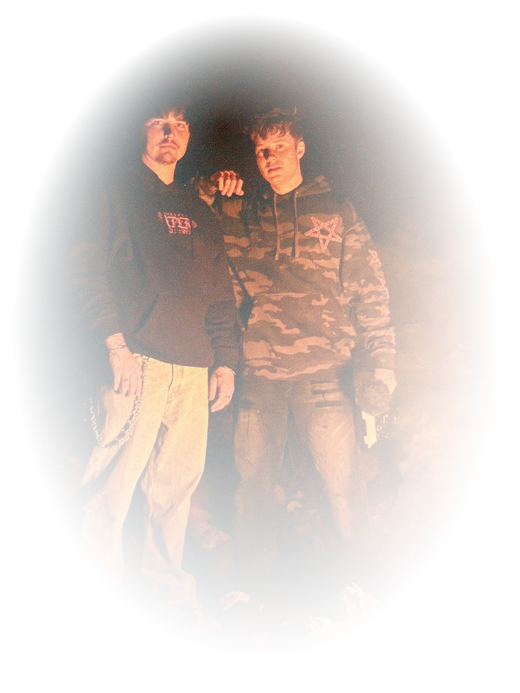

XPLR NY

This website is all about the haunted locations Sam and Colby have investigated in New York State. If you’re a fan of Sam and Colby, love the paranormal, or are interested in the history of NY, then this place is for you!
About
Sam Golbach and Colby Brock are Youtubers and paranormal investigators who travel around the world to prove there is life after death. Although they started as skeptics, Sam and Colby’s lives were changed in 2018 when they had an unforgettable experience at the Queen Mary Ship in California. Since then, they have pushed the boundaries between the living and the dead to figure out what is on the other side. They often feature famous guests and friends on their channel to legitimize the experience and have fun. Today, they have cultivated a following of over 16.3 million subscribers on YouTube and continue to impact the paranormal community with their findings.